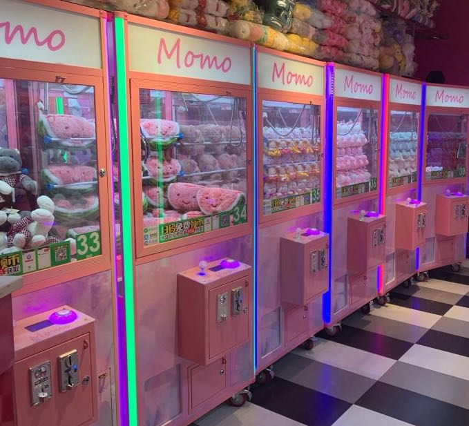
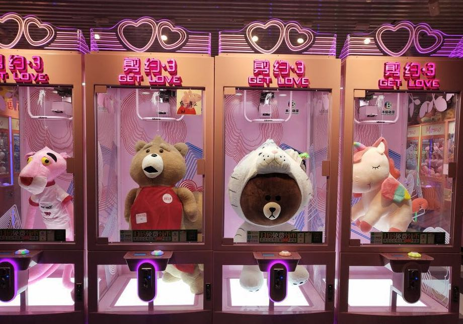
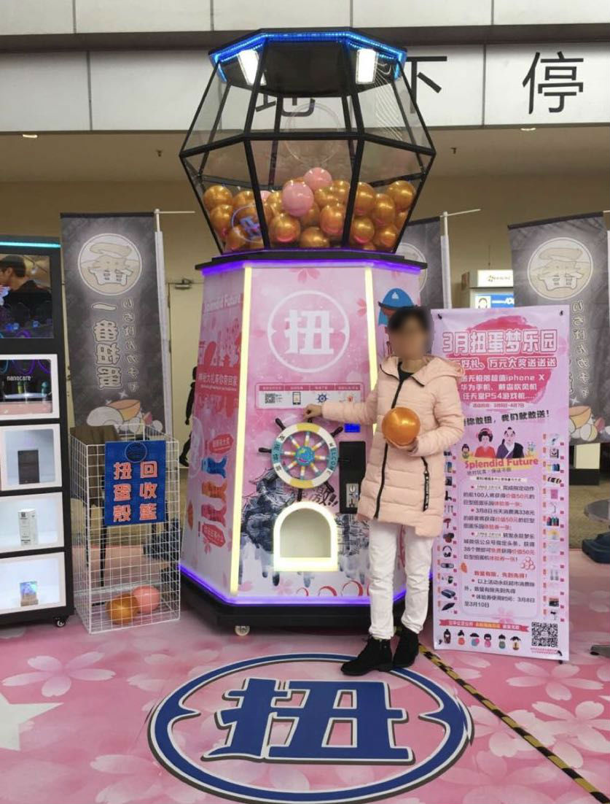

抓娃娃机
与厂家直接定制的机型，经过大数据计算后精心挑选的娃娃，以及最专业的娃娃机调试员对机器进行的专业测试与调节，使得MOMO猫爪的每一台娃娃机都具有独一无二的最高品质。在相对较高的成本投入下，比起赚钱，我们更看中的是提升品牌形象与知名度的机会，因此，我们的机器与一般商场和影院投放的普通机器相比在各方面都会有本质上的区别。

单剪机
大方的设计，粉红色的机箱，特大号的公仔，这样一个少女心爆棚的剪刀机，注定能吸引到每一个过路人的目光。只需要3~10元就有可能将价值上百元的娃娃带回家，单剪机的设计巧妙地抓住了大部分人这种想要以小博大的心理。试问谁不想成为那个抱着特大号公仔，在商场或者大街上回头率最高的仔呢？

巨型扭蛋机
夸张独特的造型，16cm的大扭蛋，我们亲自设计的独家礼品方案，打破传统福袋的礼品模式，这些使得我们的巨大扭蛋机成为了续福袋机之后的年轻消费者新宠儿。每一个扭蛋的内容都物超所值。30~50元一次的扭蛋，里面的礼品价值保证在70~350元，让每一位玩家都觉得自己付出的50元赚到了。在一些娱乐理念前卫的城市，巨大扭蛋机已取得了非常大的成功，好的场地加上到位的宣传，网红效应带来的引流效果可想而知。（图中为我们的基本款巨型扭蛋机，考虑到一般商场的层高与场地限制所精心挑选出来的。如果有需求或合适的场地，我们还有多款造型，高度最高可达10m的机型。也可为商场或影院定制巨型扭蛋机（定制造型，logo等）适用于各类大型活动。）

Events
Even the all-powerful Pointing has no control about the blind texts it is an almost unorthographic life

Training
Blind texts it is an almost unorthographic life One day however a small line of blind text by the name
Consulting
Far far away, behind the word mountains, far from the countries Vokalia and Consonantia, there live the blind texts
Events
Even the all-powerful Pointing has no control about the blind texts it is an almost unorthographic life